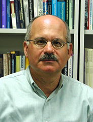

最新消息
2016/5/30 【公告】 論文徵稿，線上投稿網站已上線，收件日期至 2016 年 6 月 24 日止。
※ 投稿截止收件日期：2016/6/24
※ 通知接受日期：2016/07/15 前(先審先通知原則)，以 Email 通知
※ 最後定稿日期：2016/07/29
※ 研討會日期：2016/8/15 ~ 2015/8/17
※ 研討會舉辦地點：基隆長榮桂冠酒店
重要時程
※ 投稿截止收件日期：2016/6/24
※ 通知接受日期：2016/07/15 前(先審先通知原則)，以 Email 通知
※ 最後定稿日期：2016/07/29
※ 研討會日期：2016/8/15 ~ 2015/8/17
※ 研討會舉辦地點：基隆長榮桂冠酒店
大會資訊
中華民國影像處理與圖形識別學會(IPPR)自民國七十九年十二月成立以來，致力於電腦視覺、圖學與影像處理相關領域學術與經驗的交流。 二十多年來歷經許多先進的努力與貢獻，每年舉辦之電腦視覺、圖學與影像處理研討會，已經成為台灣地區最重要的電腦視覺、圖學與影像處理相關領域的交流場所。 歷年的主辦單位包括中華大學、台北大學、海洋大學、宜蘭大學、中興大學、東海大學、中正大學、高雄大學、雲林科技大學、彰化師範大學、佛光大學、聯合大學、中原大學 、輔仁大學、東華大學、慈濟大學等，舉辦場地涵括礁溪、墾丁、宜蘭、日月潭、嘉義、高雄、溪頭、三義、大溪、翡翠灣、花蓮等地。
2016年第二十九屆電腦視覺、圖學與影像處理研討會 (以下簡稱CVGIP 2016) 將於105年八月十五日至八月十七日於基隆長榮桂冠酒店舉行， 由影像處理與圖形識別學會、中央研究院與台灣大學共同主辦。研討會之目的在集合中華民國地區從事電腦視覺、圖學、影像與多媒體處理等相關方面的專家學者及業界先進， 交換研究心得與產學經驗，並歡迎執行政府單位計畫的研究成果的發表。會議中除了有論文口頭宣讀及廠商展示外， 並將邀請國內外知名專家學者做專題演講，探討當前電腦視覺、圖學、影像與多媒體處理等相關領域的重要趨勢。此次會議將公開徵求有關領域技術的研究成果論文發表。
大會組織
主辦機構
中華民國影像處理與圖形識別學會
中央研究院
台灣大學
協辦機構
科技部工程司工程科技推展中心
中央研究院資訊科學研究所
中央研究院資訊科技創新研究中心
統籌主席 General Chair
莊仁輝 中華民國影像處理與圖形識別學會理事長
大會主席 Conference Chair
陳銘憲 台灣大學電機資訊學院院長
廖弘源 中央研究院特聘研究員
洪一平 台灣大學教授
議程主席 Program Chair
莊永裕 台灣大學教授
王鈺強 中央研究院副研究員
林彥宇 中央研究院副研究員
會務委員
吳家麟 陳宏銘 陳冠文 傅楸善 張瑞峰 簡紹逸 陳祝嵩 劉庭祿 黃文良 呂俊賢
徐宏民 鄭文皇 李明穗
籌備委員 Steering Committee
賴文能 賴尚宏 詹寶珠 林進燈 葉家宏 林嘉文 張傳育 陳美娟 陳祝嵩 傅楸善
李宗南 林道通
議程委員Program Committee (暫定)
方瓊瑤 王才沛 王元凱 石明于 石昭玲 石勝文 朱威達 江政欽 吳家麟 呂俊賢
何前程 李忠謀 李明穗 李建德 李建樹 周遵儒 林文杰 林金樹 林信鋒 林奕成
林彥宇 林啟芳 林惠勇 林維暘 林國祥 林智揚 施仁忠 胡武誌 胡敏君 徐繼聖
夏至賢 孫永年 孫士韋 康立威 張文鐘 張意政 張鈞法 張隆紋 張傳育 張瑞峰
張寶基 張軒庭 莊啟宏 莊榮宏 許秋婷 連振昌 連震杰 郭淑美 郭景明 陳世旺
陳永昇 陳永盛 陳宏銘 陳佳妍 陳建中 陳炳宇 陳美娟 陳淑媛 陳敦裕 陳朝欽
陳煥宗 彭文孝 曾定章 曾建誠 黃士嘉 黃雅軒 楊士萱 楊家輝 葉家宏 賈叢林
廖文宏 劉庭祿 劉雲夫 歐陽明 蔡俊明 蔡淳仁 蔣迪豪 鄭文皇 鄭旭詠 鄭芳炫
鄭國順 賴尚宏 謝景棠 謝朝和 鍾國亮 韓欽銓 蘇志文 蘇柏齊 鐘太郎
論文徵稿
論文投稿注意事項
來稿一律以英文撰寫，作者加註中文姓名，若為科技部計畫之相關成果，請在論文 foot 注意或誌謝中註明科技部計畫編號，投稿以 A4 八頁為限， 並以的 Adobe PDF 檔案格式透過本會議網站線上投稿。
大會將徵求理論研究及實務應用相關的論文，範圍包括（但不限）以下的主題：
電腦視覺
景物分析 (Scene Analysis)
攝影機校正 (Camera Calibration)
運動分析 (Motion Analysis)
三維景物重建 (3D Reconstruction)
視覺式監控 (Vision-based Surveillance)
視覺式人機介面 (Vision Interface)
影像處理
文件影像處理 (Document Image Processing)
醫學影像處理 (Medical Image Processing)
遙測影像處理 (Remote Image Processing)
影像/視訊浮水印 (Image/Video Watermarking)
超解析度 (Super-resolution)
電腦圖學
繪圖 (Rendering)
三維模型 (3D Modeling)
視覺化 (Visualization)
動畫 (Animation)
人機互動 (Human-Computer Interaction)
圖形識別
人臉偵測與辨識 (Face Detection & Recognition)
表情辨識 (Facial Expression Recognition)
人體姿勢辨識 (Gesture Recognition
行為辨識 (Behavior Recognition)
視訊處理
視訊物件切割 (Video Object Segmentation)
視訊物件追蹤 (Video Object Tracking)
視訊內涵分析 (Video Content Analysis)
視訊索引與檢索 (Video Indexing and Retrieval)
視訊壓縮與傳輸 (Compression and Transmission of Videos)
視訊調適技術 (Video Adaptation)
網路視訊 (Video Networking)
其他應用
工業視覺檢測 (Industrial Visual Inspection)
機器人視覺 (Robotic Vision)
智慧型交通運輸系統 (Intelligent Transportation System)
多媒體通信網路 (Multimedia Communication Network)
數位訊號處理 (Digital Signal Processing)
多媒體單晶片 (Multimedia SoC)
生物醫學應用 (Biomedical Application)
多媒體資訊安全 (Multimedia Security and Forensics)
多媒體技術融入教學 (Multimedia in education)
會議議程
專題演講
|  | Prof. Larry DavisProfessor, Dept. Computer Science, University of Maryland |
Biographical Sketch
Larry S. Davis is a professor of computer science and director of the Center for Automation Research (CfAR). His research focuses on object/action recognition/scene analysis, event and modeling recognition, image and video databases, tracking, human movement modeling, 3-D human motion capture, and camera networks. Davis is also affiliated with the Computer Vision Laboratory in CfAR. He served as chair of the Department of Computer Science from 1999 to 2012. He received his doctorate from the University of Maryland in 1976. He was named an IAPR Fellow, an IEEE Fellow, and ACM Fellow.
Prof. Xiaogang WangAssociate Professor, Dept. Electrical Engineering, Chinese University of Hong Kong |
Biographical Sketch
Xiaogang Wang received his Bachelor degree in Electronic Engineering and Information Science from the Special Class of Gifted Young at the University of Science and Technology of China, MPhil. degree in Information Engineering from the Chinese University of Hong Kong, and PhD degree in Computer Science from Massachusetts Institute of Technology. He is an associate professor in the Department of Electronic Engineering at the Chinese University of Hong Kong since August 2009. He was the Area Chairs of IEEE International Conference on Computer Vision (ICCV) 2011 and 2015, European Conference on Computer Vision (ECCV) 2014 and 2016, Asian Conference on Computer Vision (ACCV) 2014 and 206. He received the Outstanding Young Researcher in Automatic Human Behaviour Analysis Award in 2011, Hong Kong RGC Early Career Award in 2012, and CUHK Young Researcher Award 2012. His research interests include deep learning and computer vision.
- Hong Kong RGC Early Career Award 2012
- The Chinese University of Hong Kong Young Researcher Award 2012
- Outstanding Young Researcher in Automatic Human Behavior Analysis Award 2011
- Organizer of ACCV Int’l Workshop on Deep Learning on Visual Data 2014
- Area Chair for ECCV’14, ACCV’14, ICCV’11
- Associate Editor for Image and Visual Computing, IEEE TCSVT.
大會地點
 |
 |
長榮桂冠酒店（基隆）
聯絡電話：+886-02-2427-9988
傳真：+886-02-2422-8642
email：elhklg@evergreen-hotels.com
地址：基隆市中正路62-1號
地理位置地圖：
交通住宿
旅遊資訊
基隆廟口
 |
〔圖片及資料來源 / 長榮桂冠酒店-基隆旅遊資訊〕 |
望憂谷
 |
〔圖片及資料來源 / 玩全台灣旅遊網〕 |
九份基山老街
 |
〔圖片及資料來源 / 新北市觀光旅遊網〕 |
平溪老街
 |
〔圖片及資料來源 / 新北市觀光旅遊網〕 |
贊助廠商
協辦單位
聯絡資訊
Copyright © 2016 National Taiwan University
版權所有 國立台灣大學 資訊工程學系
地址：台北市大安區羅斯福路四段1號
© 2016 National Taiwan University. All Rights Reserved.